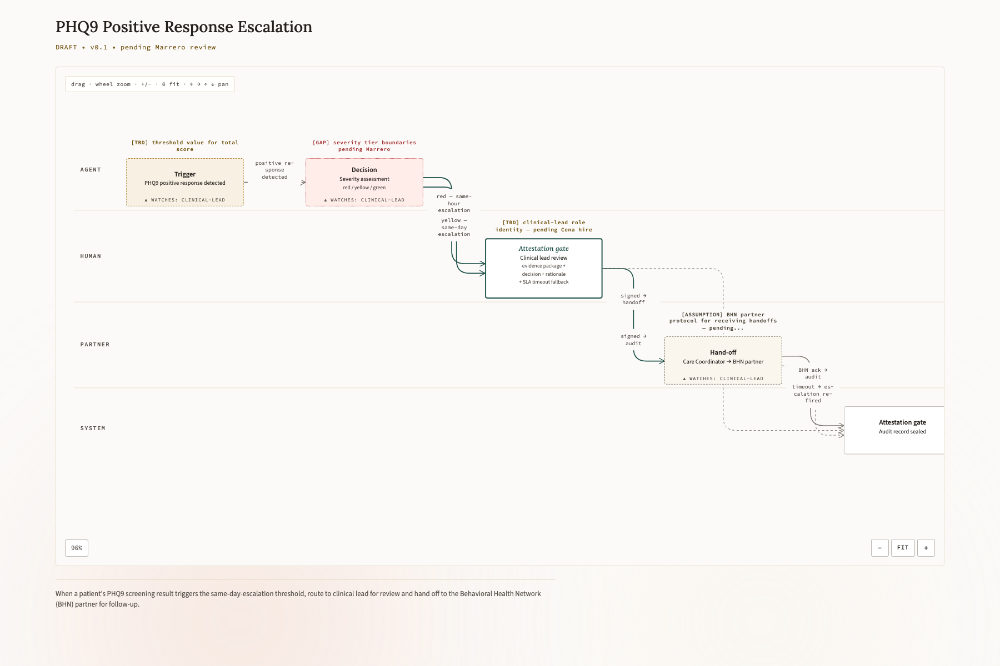

Working the UConn Care Coordination Program
Care Coordinator · Standard Operating Procedure · Version 0.1 (draft) · Reviewed May 2026
Draft — example content pending clinical review and sign-off. Do not use for training or to guide care until approved.
This procedure covers how you, as a care coordinator, run the UConn pilot week to week — working your roster, completing weekly check-ins, logging contact, handling appointment requests, and escalating concerns to the clinical team.
It also covers two mental-health screenings you administer — the PHQ9 and a 3-item anxiety screen — at baseline (during the in-person first visit) and again at the program’s repeat-screening milestones.
Who this is for and what it covers
What this role covers, and where its boundaries are.
| For | Cena care coordinators supporting participants in the UConn Health food-as-medicine pilot. |
| Covers | Working the patient roster, weekly check-in calls, logging contact attempts and outcomes, handling appointment requests, escalating safety or medical concerns, and administering the PHQ9 and 3-item anxiety screen at baseline (in the in-person first visit) and the program’s repeat-screening milestones. |
| Does not cover | Clinical or dietary counseling (the registered dietitian’s role), diagnoses, or booking appointments outside Athena. Route those to the registered dietitian or escalate. |
The weekly routine
Work the routine in order — one check-in per participant per week for the 26-week intervention.
Open your roster and find who is due this week. In Care-coordinator app → Roster, participants are sorted by days since last contact. Participants with the longest gap appear at the top — work from there.
Start the weekly check-in from the patient profile. In Care-coordinator app → Patient profile, start a check-in and choose phone or text per the participant’s saved preference. A 10–15 minute call covering order support, adherence, and any barriers to participation.
Capture the check-in and log the outcome. Fill the check-in fields: adherence, barriers, wraparound needs, and a next-touch plan. Record the contact outcome — successful, voicemail, no answer, refused, or deferred.
Escalation — when to involve the clinical team
The two highest-stakes responses. Read first.
A participant reports a safety or medical concern.
Escalate to the UConn clinical team per the UConn escalation protocol —
do not wait for the next scheduled check-in.
[NEEDS VANESSA / MARRERO — first action specifics for an at-the-time-of-call safety escalation]
Red, yellow, green — what each means and what to do
Red flag — no response within 3 days. Place a follow-up call within the next 2 days.
Yellow flag — a concern surfaced during a check-in. Escalate to the UConn clinical team per protocol.
Green flag — engaged and on track. Continue the routine weekly cadence; no action needed.
Everyday routing — requests and missed calls
The two everyday branches.
A participant requests an appointment — You receive an email in your queue. Book the visit in Athena, then confirm the time with the participant.
A check-in call goes unanswered — Log the outcome (voicemail / no answer). Missed-visit outreach is auto-flagged at 48 hours.
Mental-health screening — PHQ9 and 3-item anxiety
The care coordinator owns these two screenings — by IRB protocol, the dietitian and UConn student researchers may not administer them. Administered at baseline (in the in-person first visit, alongside the dietitian’s assessments) and again at the program’s repeat-screening milestones.
Administer the PHQ9. In the Cena assessment forms on the participant record. Result: the participant’s depression-screening score is captured and saved on the record. Note: this is one of the IRB protocol’s baseline assessments — accuracy now matters because it repeats and the comparison is what shows change.
[CONFIRM build state — PHQ9 admin UI in Care-coordinator app]Administer the 3-item anxiety screen. In the Cena assessment forms. Result: the anxiety-screening score is captured. Note: paired with the PHQ9; both belong to the same baseline set.
[CONFIRM build state — 3-item anxiety admin UI in Care-coordinator app]Watch for response triggers and escalate if needed. If either screen surfaces a positive response that meets the protocol’s escalation threshold, escalate to the UConn clinical team the same day — do not wait for the next weekly check-in.
[NEEDS HEALTHCARE DATA GOVERNANCE REVIEW — PHQ9 / anxiety-screen positive-response thresholds and escalation protocol under CT scope-of-practice]
Scope-of-practice note. The PHQ9 and 3-item anxiety screen are administered by the CITI-trained care coordinator under PI oversight. The administration scope under Connecticut licensure is pending confirmation from Healthcare Data Governance — until confirmed, follow PI guidance for any positive-response handling.

When a patient's PHQ9 screening result triggers the same-day-escalation threshold, route to clinical lead for review and hand off to the Behavioral Health Network (BHN) partner for follow-up.
Each week, for every participant — the routine checklist
The weekly routine, condensed to a tickable list.
Terms used here
Plain-language definitions, no system jargon.
Roster
Your list of participants — who they are and when each is due for a check-in.
Check-in
The weekly call where you support ordering, ask about adherence, and surface any barriers.
Athena
The system where appointments are booked. It stays the official record for scheduling.
Wraparound services
Extra support a participant may need — SNAP, a food pantry, transportation, or housing help.
Flag
A signal about a participant’s current state. Three states: red flag (no response within 3 days — unreachable, place a follow-up call), yellow flag (a concern surfaced during a check-in — escalate to the UConn clinical team per protocol), green flag (engaged and on track — continue the routine weekly cadence).
PHQ9
A nine-question depression screening tool. Administered by the care coordinator at baseline and at the program’s repeat-screening milestones.
3-item anxiety screen
A three-question anxiety screening, paired with the PHQ9 in the same baseline assessment set.
Approval status
This SOP is approved for training only when the accountable human signs it. Until then it is a draft.
Sign-off
⏳ Awaiting sign-off — draft, not yet approved for training
Director of Clinical Ops — signature pending
Accountable for clinical accuracy and operational truth · Version 0.1